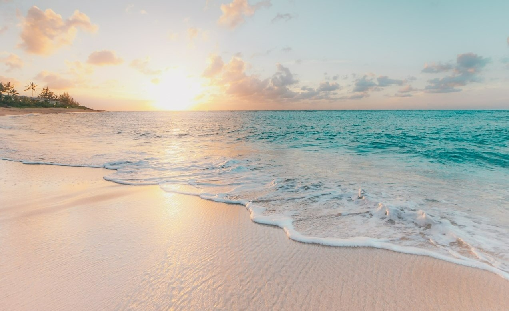
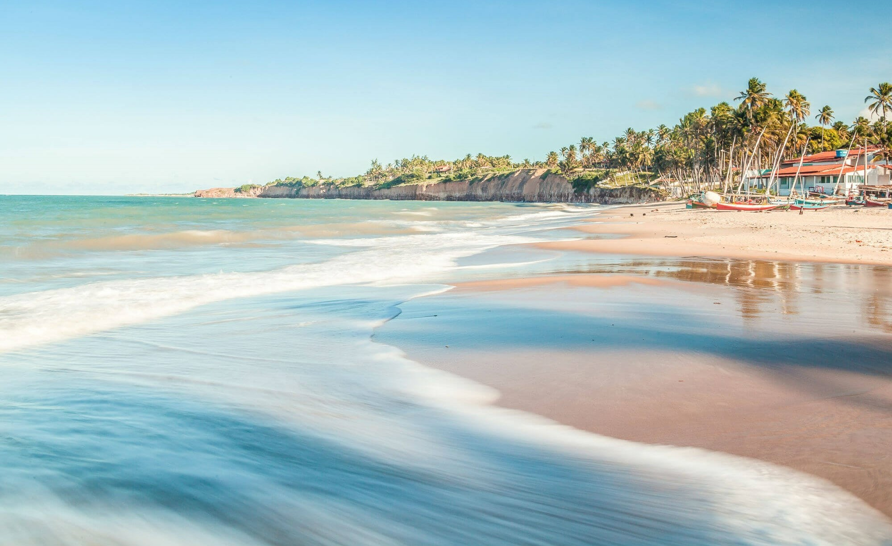
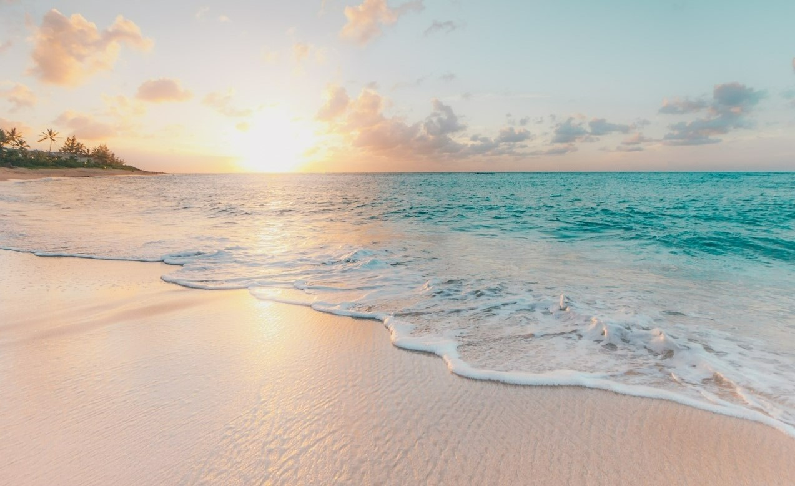
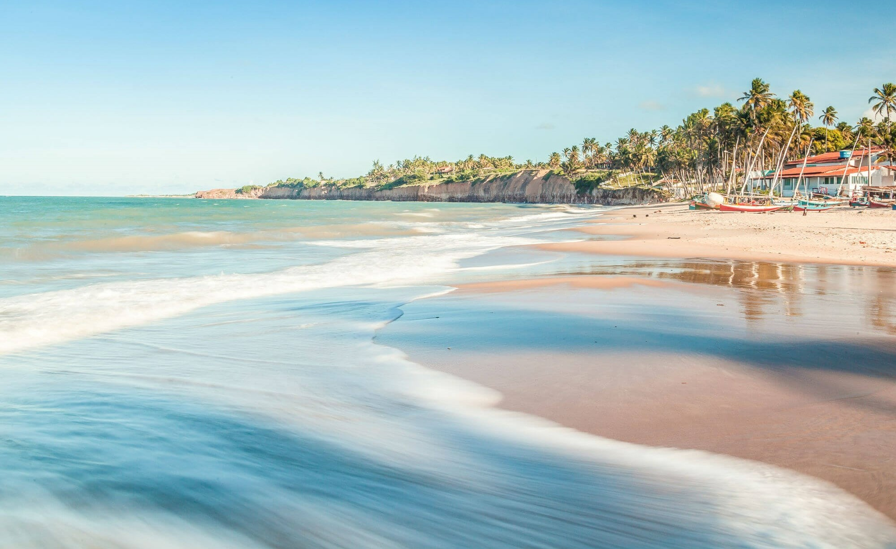

Dicas

O que levar na mala de viagem praia
Roupas de banho. Quando você for montar sua mala de viagem para praia, um dos itens essenciais são as roupas de banho (Biquinis, sungas, shortes e regatas).

Como deve ser a alimentação?
Para um dia divertido e sem impresvistos é importante beber bastante água e não ingerir alimentos muito pesados, afim de que sua diversão não seja afetada pelo falta de hidratação e mal-estar.

Pratique sempre exercícios físicos
Aproveite esse momento para investir em atividades como vôlei, futebol, corrida e ciclismo. A paisagem da praia sem dúvidas é o melhor lugar para se exercitar e relaxar.
 


